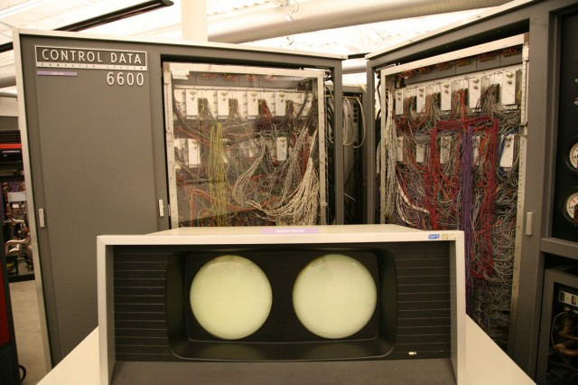

HISTORY OF SUPERCOMPUTERS:
Have you ever wondered why a supercomputer is called a supercomputer? Is it the number of processors or the amount of RAM? Must a supercomputer occupy a certain amount of space, or consume a specific amount of power?
The first supercomputer, the Control Data Corporation (CDC) 6600, only had a single CPU. Released in 1964, the CDC 6600 was actually fairly small — about the size of four filing cabinets. It cost $8 million — around $60 million in today’s money — and operated at up to 40MHz, squeezing out a peak performance of 3 million floating point operations per second (flops).
In comparison, the CDC 6600 was up to 10 times faster than the fastest computer at the time, the $13-million ($91m today!), 2000-square-foot-occupying IBM 7030 Stretch — thus earning the title of supercomputer. At this point, Intel was still seven years away from releasing the 740KHz 4004 CPU. (For a bit of fun, definitely read the original 1960 IBM 7030 press release.),
The CDC 6600 was super for other reasons, too. It was cooled with Freon that circulated in pipes around the four cabinets, which was then heat exchanged with a chilled external water supply (you can see some pipework in the bottom right corner of the image above). While there was only one CPU (which in those days was constructed from multiple circuit boards, not a single chip!) the CDC 6600 had 10 Peripheral Processors, each of which was dedicated to managing I/O and keeping the CPU’s queue full. The CPU itself contained 10 parallel functional units, each of which were dedicated to different tasks; floating point add, floating point divide, boolean logic, etc. The architecture was superscalar, in other words (though this word didn’t exist at the time).
The CPU had 60-bit word length and 60-bit registers, but a very small instruction set, because it only dealt with information that had been pre-processed by the Peripheral Processors. It is this simplicity that allowed the CDC 6600 CPU to be clocked so high. By today’s standards, we would call the CDC 6600 the first RISC system.